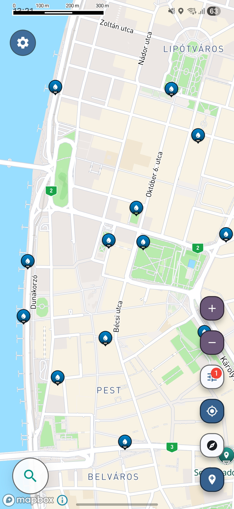

Travel utility map
Find free drinking water anywhere
Running out of water on the road is frustrating when refill points are hidden, inconsistent, or missing from standard map apps.

Screenshot from the Voyager Maps app showing nearby drinking water locations.
Why finding free water is still harder than it should be
- Free drinking water points are often hidden in parks, stations, public buildings, or refill spots that never show up clearly.
- Travelers often waste time buying bottled water because they cannot quickly verify nearby refill options.
- General map apps rarely focus on practical water access when you need it fast during a walk, road trip, or city transfer.
A more practical way to find nearby refill spots
The app helps travelers find curated locations built around practical utility, not generic search clutter. Instead of digging through unrelated results, you can focus on places that matter when you need water quickly.
Useful refill points, taps, and water access spots collected for real travel needs.
Built around moments when you are walking, transferring, driving, or exploring unfamiliar areas.
Highlights places that are often missing or buried on most maps.
Find more locations nearby
Open the full map experience to see more useful places around you.
Drinking water map for travelers, walkers, and road trips
A good drinking water map helps you do one simple thing faster: find free drinking water without guessing. When you are traveling, exploring a new city, or spending long hours on the road, it is not always easy to locate trusted refill points. Public taps, bottle refill stations, and other free water sources can exist nearby, but they are often scattered across different apps, hidden in reviews, or not obvious on a standard map search.
This page is designed for people searching for a drinking water map that focuses on practical access. Instead of relying on general place results, you can use a more traveler-focused approach to discover free drinking water locations that make sense when you are moving. Whether you want to refill a bottle before a train ride, avoid buying extra plastic bottles on a city walk, or find water on a road trip stop, the goal is simple: quicker access to useful water spots near you.